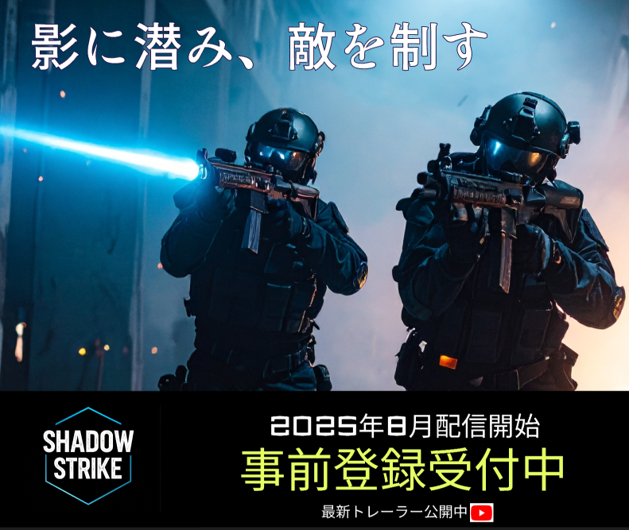

SHADOW STRIKE（仮）
公式サイトへURL:https://shadowstrike-game.com（仮）- 制作背景
- 新作FPSゲーム『SHADOW STRIKE（シャドウストライク）』の広告キャンペーン用バナーを制作。2025年8月に配信予定。
- 使用言語、アプリ
- Adobe Firefly／Figma／Photoshop
- 制作期間
- デザインカンプ2日
フォトショップ1日 - ターゲット
- 15〜35歳のFPSプレイヤーで、男女問わず（やや男性中心）。Apex Legends, Call of Duty, Valorantなどをプレイしている層。SNS・YouTube・Twitch等のゲーム系メディアをよく閲覧している人。
- 目的
- 各種Web広告媒体（Google広告、SNS、ゲームメディアなど）で使用し、事前登録・認知拡大・トレーラー再生数の増加を目指す。
- バナー構成
- 一枚の背景とキャッチコピーを使って、没入感が出やすいようにしました。優先度の高い事前登録中の文字を大きくしました。
- デザイン
- ダークでシネマティックな雰囲気。近未来ミリタリー（ヘルメット・ドローン・HUD風UI）。アクションと緊張感、没入感を重視。視認性の高いフォント・アイコン使用。キャラクター1〜2体のキービジュアル1枚。キャッチコピーは、「影に潜み、敵を制す」、「戦場は、お前の本能を試す」です。
- 配色
- ダークな雰囲気、近未来感を表すために、黒と青色を採用しました。補色関係にある黄色や赤色をアクセントカラーとして採用しました。
#000
#07C9F5
#E5FF64
#FF3D3D
Point
フッターの設定
モバイル環境での操作性を最優先に考え、フッターナビゲーションを設計しました。視認性の高いオリジナルアイコンとテキストを組み合わせることで、目的のページを直感的に見つけやすくしています。また、タップ領域を十分に確保し、現在地を示すためにアクセントカラーの黄色を背景に設けることで、ストレスのないナビゲーション体験を目指しました。
イラストを描いてみた
絵を描く事が趣味であり、このポートフォリオではデジタルでのイラスト制作にも挑戦してみました。IbisPaintを使用し、キービジュアルのネモフィラの花だけでなく、フッターのアイコンやファビコンも描きました。
見やすさを意識したレイアウト
サイト全体を通して、情報が整理され、ユーザーが必要な情報へ迷わず辿り着ける『見やすいレイアウト』を追求しました。特に、各制作実績ページ間や、ブログ記事への導線を明確にすることで、サイト内をスムーズに回遊できるよう工夫しています。これにより、私の作品や考えをストレスなくご覧いただけることを目指しました。
サイト設計
下記のボタンから、Figmaでデザインカンプやサイト設計等を確認できます。
FigmaへGo！